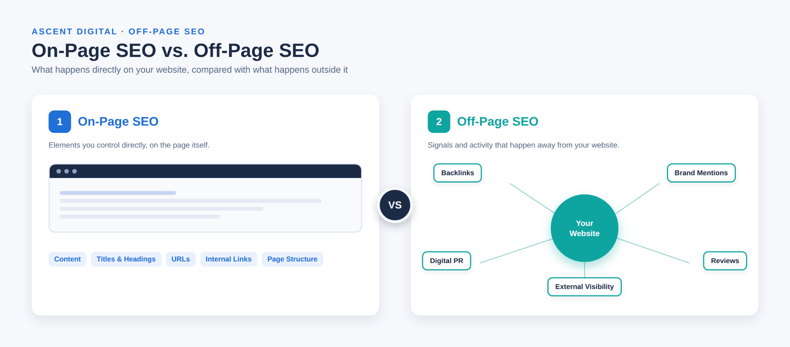
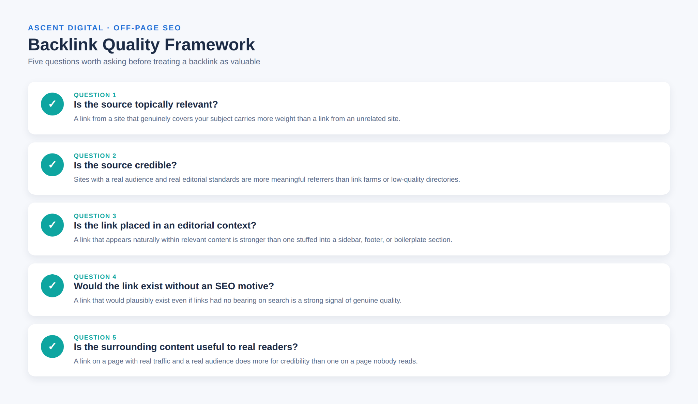
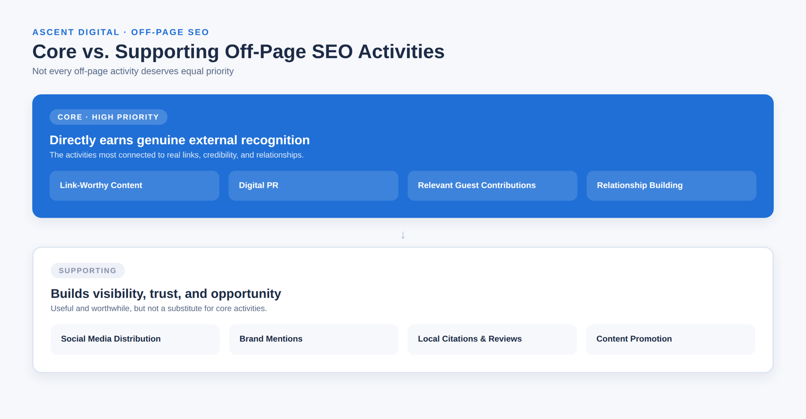

What Is Off-Page SEO? A Beginner's Guide
Off-page SEO refers to the activities and signals that happen outside your own website but can influence how search engines and users perceive it. Backlinks, brand mentions, digital PR, reviews, and other external activities can all contribute to your site's visibility and reputation. Many people reduce off-page SEO to link building, but the concept is broader than backlinks.
This guide explains what off-page SEO means, why it matters, how it differs from on-page SEO, what backlinks have to do with it, how to evaluate backlink quality, which off-page SEO techniques deserve priority, what practices to avoid, and how to measure progress.
What Is Off-Page SEO?
Off-page SEO, also called off-site SEO, is the set of activities and external signals that happen outside your website and can influence its visibility, credibility, and discoverability in search.
A simple off page SEO definition is: work done away from your own website to build external credibility, visibility, relationships, and recognition.
Backlinks are an important part of off-page SEO. A backlink is a link from another website to yours. But off-page SEO also includes relevant brand mentions, digital PR, guest contributions, reviews, local citations, content promotion, and social media distribution.
The distinction matters because not every external activity is a confirmed direct Google ranking factor. Backlinks are an established part of how search engines evaluate websites, while activities such as social media and brand mentions can support visibility, discovery, reputation, and opportunities to earn links.
Why Is Off-Page SEO Important?
Search engines evaluate more than what a website says about itself. External references and recognition can help provide context about a site's credibility and relevance.
Off-page SEO can support:
- External credibility. Relevant, reputable websites linking to or mentioning your content can provide independent recognition.
- Discovery. Guest contributions, digital PR, social sharing, and content promotion can introduce your site to new audiences.
- Referral traffic. A relevant backlink can send visitors directly to your website.
- Reputation and trust. Reviews, mentions, citations, and a consistent presence across relevant platforms can influence how users perceive a business.
- Relationships and opportunities. Off-page activities can lead to partnerships, media coverage, collaborations, and future link opportunities.
These activities do not guarantee rankings, traffic, or conversions. They work alongside the quality, relevance, and usability of the website itself.
On-Page SEO vs Off-Page SEO
On-page SEO focuses on what you control directly on your website. Off-page SEO focuses on activities and signals that happen outside it.

| On-Page SEO | Off-Page SEO | |
|---|---|---|
| Where it happens | On your website | Outside your website |
| What it covers | Content, titles, headings, URLs, internal links, images, page structure | Backlinks, brand mentions, digital PR, guest contributions, reviews, social visibility |
| Who controls it | You directly | Influenced largely by other people and websites |
| Main purpose | Help users and search engines understand and use your pages | Build external credibility, visibility, and reputation |
Technical SEO is separate. It covers the infrastructure that helps search engines crawl, render, and index a website, including crawlability, mobile rendering, and site performance.
What Are Backlinks?
A backlink is a link from one website to a page on another website. For example, if a marketing publication links to an article on your website, that link is a backlink.
Backlinks are central to off-page SEO because links can help search engines understand how content is referenced across the web. However, more links do not automatically mean better rankings.
A relevant, credible backlink can be more useful than a large number of unrelated or low-quality links. It is also misleading to treat every backlink as transferring a fixed amount of "link juice." Search engines evaluate links in more nuanced ways.
The practical lesson is simple: focus on earning links that make sense rather than chasing a link count.
What Makes a Backlink High-Quality?
Instead of judging a backlink by one metric, use a practical quality framework.
- Is the source topically relevant? A link from a website that genuinely covers your subject is more relevant than one from an unrelated site.
- Is the source credible? A site with a real audience, useful content, and genuine editorial standards is more meaningful than a link farm or low-quality directory.
- Is the link placed in an editorial context? A link that naturally supports relevant content is preferable to one placed in an unrelated footer, sidebar, or boilerplate section.
- Would the link exist without an SEO motive? If your content is genuinely useful to the publication's readers, there is a natural reason for the link to exist.
- Is the surrounding content useful? A link should appear in content that provides genuine value to readers rather than existing only to create an SEO signal.

Third-party metrics such as Domain Authority or Domain Rating can help with comparisons, but they are estimates created by SEO tools. They are not Google ranking scores.
Main Off-Page SEO Techniques
The following off page SEO techniques are among the most useful for understanding the broader off-site SEO process.
- Earning links through useful content. Original research, useful guides, data, tools, and resources can give other websites a genuine reason to reference your work.
- Digital PR and editorial coverage. A genuinely newsworthy story, useful research, or relevant expert perspective can earn coverage from publications that serve your audience.
- Relevant guest posting. Writing useful content for a publication your audience already reads can build visibility, relationships, and potentially earn a natural backlink.
- Relationship-based outreach. Research relevant websites, publications, journalists, and industry contacts instead of sending the same link request to everyone.
- Brand mentions. Being mentioned in relevant articles, discussions, or industry roundups can increase awareness and may create future link opportunities.
- Content promotion. Sharing useful content with relevant audiences can increase its chances of being discovered and referenced.
- Local citations and reviews. For businesses with a local presence, accurate business information and genuine customer reviews can support local visibility and trust.
- Social media. Social platforms can distribute content and help it reach people who may later mention or link to it. Social engagement itself should not be presented as a direct Google ranking mechanism.
- Relevant partnerships and collaborations. Joint content, partnerships, and other genuine collaborations can create natural opportunities for mentions, referrals, and links.
Core vs Supporting Off-Page SEO Activities
Not every off-page SEO method deserves the same priority.
Core / High-Priority Activities
These activities are most directly connected to earning genuine external recognition:
- Creating content worth referencing
- Digital PR and relevant editorial outreach
- Relevant, high-quality guest contributions
- Building relationships with relevant people and websites
Supporting Activities
These can build visibility, discovery, trust, or opportunities that support the core work:
- Social media distribution
- Brand mentions
- Local citations and reviews
- Content promotion

The important lesson is that activity and priority are not the same thing. A beginner should not spend most of their time on social posting or directory submissions while ignoring useful content and relevant relationship-building.
Off-Page SEO Practices to Avoid
Some off page SEO tactics are designed primarily to manipulate search rankings instead of earning genuine recognition.
- Buying links for ranking purposes. Purchasing links specifically to manipulate search results can violate search engine guidelines.
- Link schemes. Large-scale reciprocal exchanges, private blog networks, and link farms attempt to manufacture links rather than provide value to readers.
- Irrelevant mass guest posting. Publishing low-quality content on unrelated websites simply to obtain backlinks is not a sustainable SEO strategy.
- Thin content created for links. Content should exist to help users, not simply to create something that can be used to attract or place links.
- Excessive exact-match anchor text. Repeatedly using the same keyword as anchor text can create an unnatural pattern.
- Low-quality link placements. Spammy directories, comment spam, and irrelevant placements generally provide little genuine value.
- Automated or deceptive outreach. Misrepresenting relationships, sending irrelevant mass messages, or using deceptive tactics can damage both SEO efforts and professional reputation.
A useful rule is this: if the main purpose of an activity is to manufacture a search signal rather than provide value to people, reconsider the tactic.
How to Measure Off-Page SEO Success
No single metric proves that off-page SEO is working. Look at several signals together over time.
- Referring domains. Track the number and quality of distinct websites linking to you.
- Link quality and relevance. Review where your backlinks come from and whether they are genuinely relevant.
- Referral traffic. Check whether links and mentions send real visitors to your website.
- Brand mentions. Monitor where and how your business or website is being discussed.
- Organic visibility. Track impressions, rankings, and organic traffic as longer-term trends rather than relying on a single snapshot.
- Branded search interest. Growing searches for your brand can indicate increasing awareness.
- Conversions and leads. Where appropriate, connect off-page activity to meaningful business outcomes.
- Local visibility and reviews. Local businesses can also monitor relevant reviews and local search visibility.
Third-party authority metrics should be treated as estimates rather than direct measurements of Google's evaluation of a website.
A Simple Off-Page SEO Strategy for Beginners
A beginner does not need to use every off-page SEO tactic at once. Start with a simple sequence.
- Understand your audience and topic. Know what your audience needs and where useful information is missing.
- Create something worth referencing. Build useful content, original research, data, tools, or resources.
- Find relevant opportunities. Identify websites, publications, journalists, and communities that genuinely match your topic and audience.
- Prioritize quality and relevance. A small number of strong opportunities is more useful than chasing large numbers of unrelated links.
- Reach out thoughtfully. Personalize outreach based on the recipient's work instead of sending generic messages.
- Earn mentions and links through value. Give publishers and audiences a genuine reason to reference your content.
- Measure meaningful outcomes. Track referring domains, referral traffic, visibility, mentions, and business outcomes where relevant.
- Improve over time. Keep the approaches that attract useful attention and adjust those that do not.
Off-page SEO is a long-term process. Quality, relevance, and genuine value are more useful foundations than trying to build a large number of links quickly.
Conclusion
Off-page SEO is about building genuine recognition beyond your own website. Backlinks remain an important part of it, but the broader picture includes relevant mentions, digital PR, guest contributions, relationships, reviews, local visibility, and content distribution.
The most effective approach is not to pursue every possible tactic. Focus first on useful content, relevant relationships, credible opportunities, and high-quality backlinks. Then use supporting activities to expand visibility and create more opportunities for people to discover and reference your work.
There are no guaranteed rankings or fixed results from off-page SEO. The goal is to build external credibility and visibility through activities that provide real value to users and the wider web.
Frequently Asked Questions
What Is Off-Page SEO in Simple Words?
Off-page SEO is the work done outside your website to build external visibility, credibility, relationships, and recognition. Backlinks are one of the most important examples, but they are not the whole concept.
What Are Examples of Off-Page SEO?
Examples include earning backlinks, digital PR, relevant guest contributions, brand mentions, local citations, genuine reviews, content promotion, social media distribution, and professional relationship building.
Is Link Building Part of Off-Page SEO?
Yes. Link building is a major part of off-page SEO because backlinks are an important external signal. However, off-page SEO also includes activities that go beyond acquiring links.
What Makes a Backlink Valuable?
A valuable backlink generally comes from a relevant and credible source, appears naturally within useful editorial content, and provides a genuine reason for readers to visit the linked page.
Is Social Media Part of Off-Page SEO?
Social media can support off-page SEO by helping content reach audiences who may mention or link to it. However, social engagement itself should not be treated as a direct Google ranking factor.
What Is the Difference Between On-Page and Off-Page SEO?
On-page SEO focuses on elements you control directly on your website, such as content, titles, headings, and page structure. Off-page SEO focuses on external activities and signals such as backlinks, mentions, digital PR, and reputation.
How Long Does Off-Page SEO Take?
There is no fixed timeline. Off-page SEO usually develops gradually as a website earns relevant links, mentions, relationships, and recognition over time.
How Can Beginners Start Off-Page SEO?
Start by creating genuinely useful content, finding relevant websites and publications, building professional relationships, and pursuing high-quality opportunities rather than trying to acquire as many links as possible.